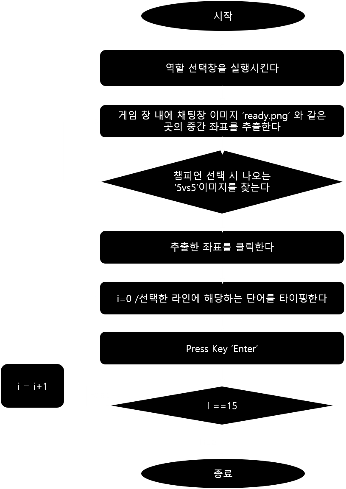

롤 일반게임 빠른선픽 매크로
리그오브레전드 에서는 게임 내에 존재하는 5가지 역할 중 하나를 선택해야 합니다. 그 중 일반게임에 한해서는 채팅창에 자신이 원하는 라인(역할)을 먼저 쓰는 자에게 선택권이 부여되는 암묵적인 룰이 있습니다. 이 룰에 따라 게임을 플레이하다 계속되는 단순반복적인 행동을 줄이고 누구보다 빠르게 역할을 선점 할 수 있도록 Python 의 PyAutogui 를 통해 자동화 시스템을 구축해 보았습니다. 이후 사용자의 편의를 위해 TkInter를 통해 Gui를 구현했습니다.
logic

Demonstrate video